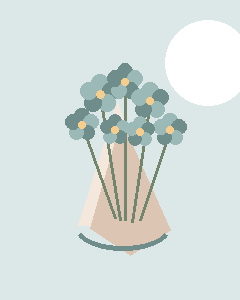
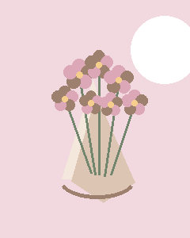

Chọn hoa theo màu sắc và cảm xúc
Tông xanh, hồng, đỏ hay tím có thể tạo nên những sắc thái rất khác nhau cho món quà.
Đọc bài viếtGóc nhỏ của tiệm
Một vài gợi ý đơn giản để chọn hoa, viết thiệp và chuẩn bị món quà phù hợp với từng dịp.

Tông xanh, hồng, đỏ hay tím có thể tạo nên những sắc thái rất khác nhau cho món quà.
Đọc bài viết
Một lời nhắn không cần dài. Điều quan trọng là đúng người, đúng dịp và đúng cảm xúc.
Đọc bài viết
Một vài thao tác nhỏ khi cắm và thay nước giúp hoa giữ được trạng thái đẹp lâu hơn.
Đọc bài viết